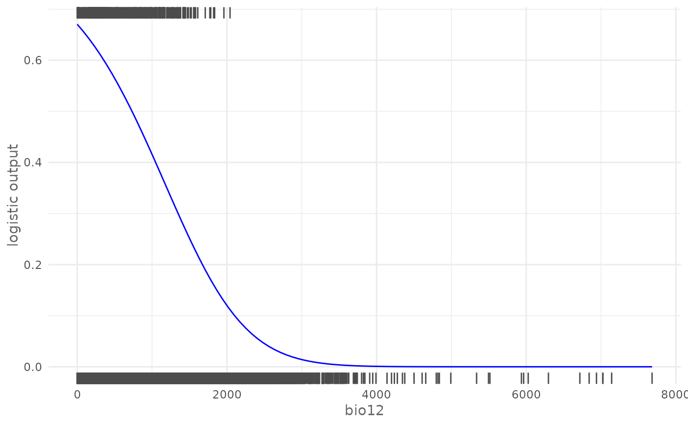
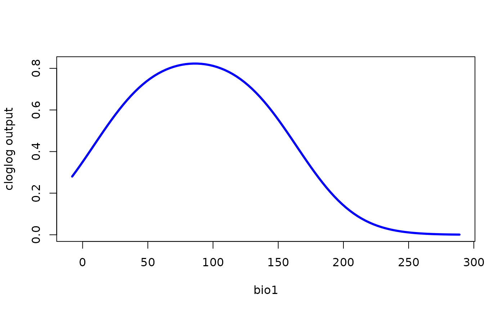
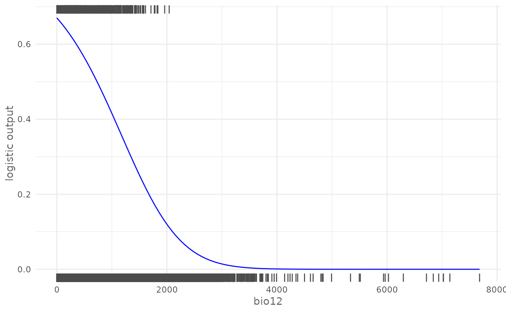
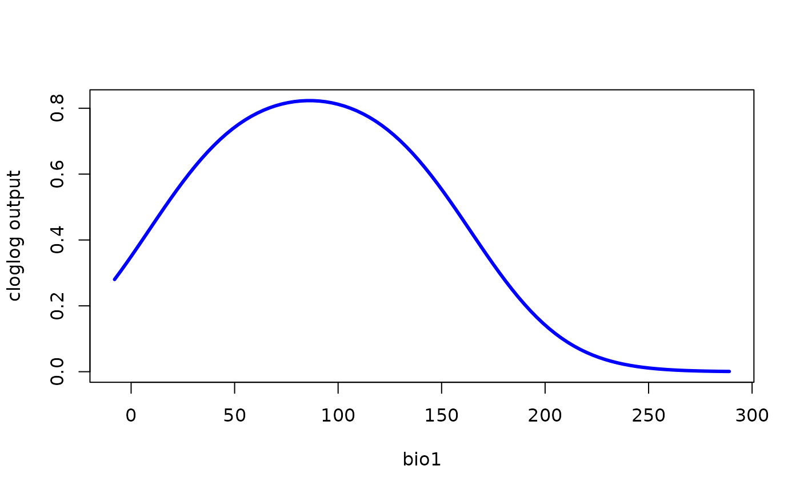

Plot the Response Curve of the given environmental variable.
plotResponse(
model,
var,
type = NULL,
only_presence = FALSE,
marginal = FALSE,
fun = mean,
rug = FALSE,
color = "red"
)Arguments
- model
SDMmodel or SDMmodelCV object.
- var
character. Name of the variable to be plotted.
- type
character. The output type used for "Maxent" and "Maxnet" methods, possible values are "cloglog" and "logistic", default is
NULL.- only_presence
logical, if
TRUEit uses only the presence locations when applying the function for the marginal response, default isFALSE.- marginal
logical, if
TRUEit plots the marginal response curve, default isFALSE.- fun
function used to compute the level of the other variables for marginal curves, default is
mean.- rug
logical, if
TRUEit adds the rug plot for the presence and absence/background locations, available only for continuous variables, default isFALSE.- color
The color of the curve, default is "red".
Value
A ggplot object.
Details
Note that fun is not a character argument, you must use mean and
not "mean".
Examples
# \donttest{
# Acquire environmental variables
files <- list.files(path = file.path(system.file(package = "dismo"), "ex"),
pattern = "grd", full.names = TRUE)
predictors <- raster::stack(files)
# Prepare presence and background locations
p_coords <- virtualSp$presence
bg_coords <- virtualSp$background
# Create SWD object
data <- prepareSWD(species = "Virtual species", p = p_coords, a = bg_coords,
env = predictors, categorical = "biome")
#> ℹ Extracting predictor information for presence locations
#> ✔ Extracting predictor information for presence locations [41ms]
#>
#> ℹ Extracting predictor information for absence/background locations
#> ✔ Extracting predictor information for absence/background locations [96ms]
#>
# Train a model
model <- train(method = "Maxnet", data = data, fc = "lq")
# Plot cloglog response curve for a continuous environmental variable (bio1)
plotResponse(model, var = "bio1", type = "cloglog")

# Plot marginal cloglog response curve for a continuous environmental
# variable (bio1)
plotResponse(model, var = "bio1", type = "cloglog", marginal = TRUE)
 # Plot logistic response curve for a continuous environmental variable
# (bio12) adding the rugs and giving a custom color
plotResponse(model, var = "bio12", type = "logistic", rug = TRUE,
color = "blue")

# Plot response curve for a categorical environmental variable (biome) giving
# a custom color
plotResponse(model, var = "biome", type = "logistic", color = "green")
# Train a model with cross validation
folds <- randomFolds(data, k = 4, only_presence = TRUE)
model <- train(method = "Maxnet", data = data, fc = "lq", folds = folds)
# Plot cloglog response curve for a continuous environmental variable (bio17)
plotResponse(model, var = "bio1", type = "cloglog")

# Plot logistic response curve for a categorical environmental variable
# (biome) giving a custom color
plotResponse(model, var = "biome", type = "logistic", color = "green")

# }
# Plot logistic response curve for a continuous environmental variable
# (bio12) adding the rugs and giving a custom color
plotResponse(model, var = "bio12", type = "logistic", rug = TRUE,
color = "blue")

# Plot response curve for a categorical environmental variable (biome) giving
# a custom color
plotResponse(model, var = "biome", type = "logistic", color = "green")
# Train a model with cross validation
folds <- randomFolds(data, k = 4, only_presence = TRUE)
model <- train(method = "Maxnet", data = data, fc = "lq", folds = folds)
# Plot cloglog response curve for a continuous environmental variable (bio17)
plotResponse(model, var = "bio1", type = "cloglog")

# Plot logistic response curve for a categorical environmental variable
# (biome) giving a custom color
plotResponse(model, var = "biome", type = "logistic", color = "green")

# }